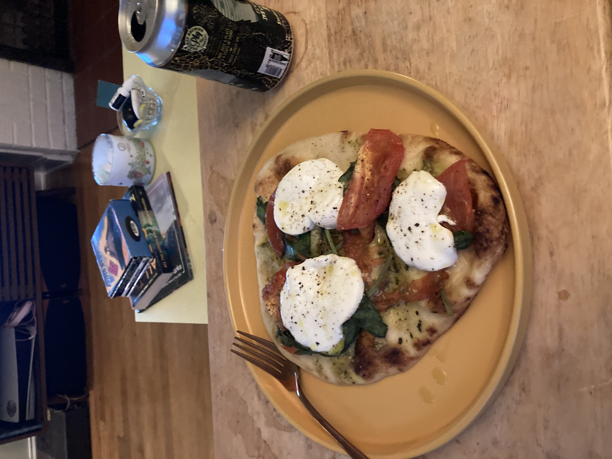
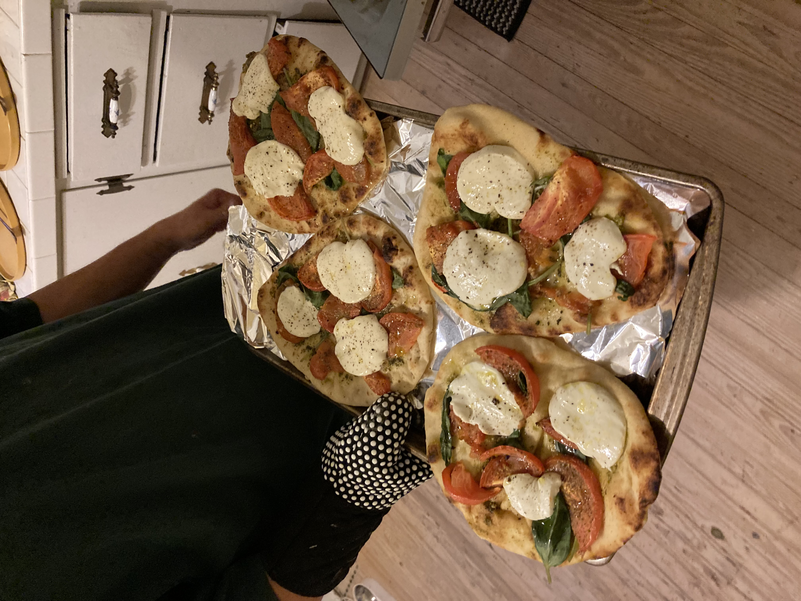
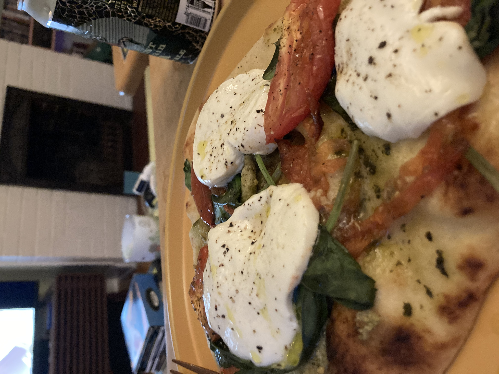

Margherita Naan

Margherita Pizza but it's Naan
I love basil. I also love cheese. You know what else I like? Bread. Thus, I present you,
Margherita Naan.
This recipe will not be very involved, you only need to chop up a couple things and turn on the
oven, so go ahead and get an oven mitt and a sharp knife ready. We will also be using pesto instead of marinara
or some other pizza sauce but you can use whatever you like in place of that!
Ingredients
- Naan bread, about four pieces
- One large tomato, beefsteak or other similar variety
- One big ol' ball of Mozzarella
- A bunch of basil
Steps
- Wash everything!
- Slice up your tomato into one inch pieces or quartered into wedges if you have extra, might be prettier.
- Slice the mozzarella into little discs, no choice here.
- Spread your pesto, or other sauce, onto the naan. Nice.
- Stack everything however looks most appetizing on top of your saucy naan.
- Broil on low in about five minute increments 'til the cheese looks like a nice
toasty marshmallow.
- Top with olive oil and some S&P.


Home